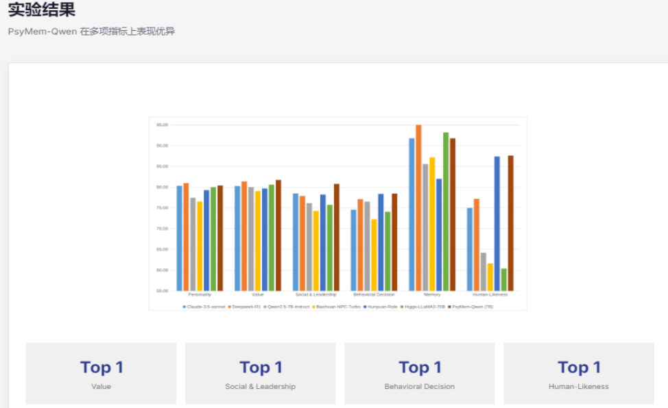

核心特点
用于生成和分析模拟社会行为的生成式研究工具
细粒度心理画像
通过26个可量化的心理指标，涵盖个性(Big Five)、价值观(Schwartz)以及显式行为模式，精确建模角色的内在动机和外在表现。
显式记忆控制
引入记忆对齐训练范式，建立角色扮演响应与角色记忆之间的显式认知锚定，确保模型严格基于检索到的记忆生成回应，解决现有模型记忆幻觉和角色崩坏的问题。
记忆对齐训练
通过双重控制机制(属性维度和情景记忆约束)，增强角色扮演的一致性，解决现有模型记忆幻觉和角色崩坏的问题。
大规模数据集
构建了包含5,414个角色、38,962场对话和536,636条语料的大规模数据集，来源于539部不同题材的小说，支持全方位的角色模拟。
技术原理
深入了解PsyMem的核心架构
潜在心理属性建模
利用现代心理学框架（Big Five, Schwartz Values）将角色内在属性量化，指导角色的动机、偏好和情感反应，是角色行为的深层驱动力。
- Personality：Openness, Conscientiousness, Extraversion, Agreeableness, Neuroticism
- Values：Self-direction, Stimulation, Hedonism, Achievement, Power等
显式行为模式分析
捕捉角色在社交互动、领导风格和冲突解决中的外在表现。
- Social&Leadership：基于Zimbardo心理学原则的6个维度
- Behavioral Decision：使用Thomas-Kilmann冲突模式工具（TKI）分析
记忆整合机制
受海马体和认知映射机制启发，将角色、事件和关系转化为知识图谱；构建基于图的检索增强生成（GraphRAG），精准定位相关记忆；通过属性维度与情景记忆的Dual-Control共同约束生成过程。
实验结果
PsyMem-Qwen 在多项指标上表现优异

展示PsyMem-Qwen实验结果柱状图，PsyMem-Qwen 在多项指标上表现优异，呈现模型在 Value、Social & Leadership、Behavioral Decision、Human-Likeness 四项均获得 Top 1 表现。
应用场景
深度嵌入人类认知和行为仿真和智能交互的各类虚实场景。
人物分析
模拟具有特定社会属性、人格、记忆等特征的关键人物，分析其对信息或事件的观点和态度。
社交机器人
创造高质量社交机器人，模拟社交媒体用户特点和行为，代替用户自动化完成特定任务。
互动体验
通过与 AI 扮演的角色交互，如难缠客户、强势谈判者、生活伴侣等，实现沉浸式体验和技能点提升。
AI 社区
创建成千上万个拥有不同价值观和性格组合的 AI 智能体，观察它们在虚拟社区中社会互动及群体现象涌现。